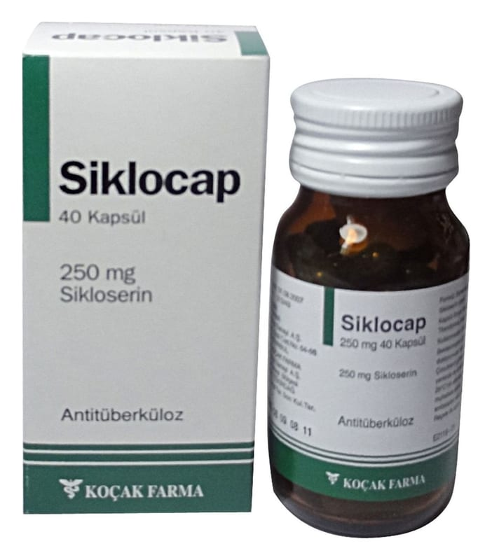

Siklocap 250 mg Kapsül, 500 Adet

Ne için kullanılır
KT · Bölüm 1SİKLOCAP, opak yeşil kapsüller içinde hafif sarımsı, beyaz renkte toz şeklindedir. SİKLOCAP 250 mg kapsül, 40 ve 500 kapsüllük pilver proof alüminyum kapaklı bal renkli silika jel ihtiva eden cam şişelerde bulunur. SİKLOCAP, etkin madde olarak sikloserin içerir. Sikloserin, bakteriyel enfeksiyonların ve
tüberkülozun tedavisinde kullanılan geniş spektrumlu bir antibiyotiktir.
SİKLOCAP aktif akciğer ve akciğer dışı tüberküloz ile böbrek enfeksiyonlarının tedavisinde
kullanılır. Tüberküloz tedavisinde sadece sikloserin dışındaki diğer antitüberküloz ilaçlar
(tüberküloz (verem) tedavisinde kullanılan ilaçlar) etkisiz olduğunda ve yeniden tedavi
gerektiren durumlarda kullanılır.